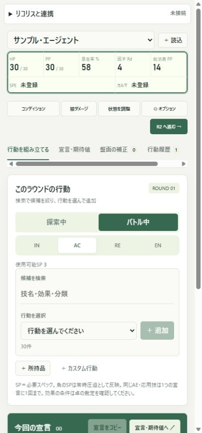

ブラウザ版
インストールせず、すぐに始めたい。
- Excelキャラシートを読み込み
- 行動の組み立て・消費管理・対抗計算
- 同じブラウザにデータを保存
ULFHAMR / YGGDRASILL RW
キャラシートから、宣言、消費、対抗判定まで。
セッションの数値管理を、ひとつのしおりに。
情報拡張装置【ウールヴハム】
キャラシート読込 · 行動履歴 · バフ補正 · 期待値計算

01 / EDITIONS
共通のキャラ管理を、卓に合う形で。
版を移るときはバックアップで引き継げます。
インストールせず、すぐに始めたい。
卓画面の隅に、常に置いておきたい。
リコリスと、ひとつの画面で使いたい。
今回の更新Firefox版のコマ追加はダウンロード・ドラッグ不要に。配布と操作説明をこのページへまとめました。
「＋ 読込」からRW v0.3pre6.3形式の .xlsx を選び、読込内容を確認して保存します。ステータス・応用技・所持品を取り込み、複数キャラは名前のプルダウンで切り替えられます。
探索中は探索技能を基本行動から選べます。ラウンドとIN・AC・RE・ENを進めるのはバトル中だけです。
検索でプルダウンの候補を絞り、行動を選んで「＋ 追加」。必要なレベルや出目を入力して、今回の宣言と消費を確認します。
「宣言をコピー」で宣言本文を卓へ貼り付け、「この宣言を登録」でリソースと履歴に反映します。コピーしただけでは状態は変わりません。
ブラウザ版を開くだけで利用できます。以前のトップページに保存したデータも、同じブラウザ・同じドメインなら引き継ぎます。新しいアプリのURLは app.html です。
Ulfhamr.exe を起動します。WebView2 Runtimeが必要な環境では、Microsoftの配布元から導入します。更新時はアプリを終了し、新しいZIPを展開して起動してください。データの保存先は共通です。行動の未登録分は終了前に登録してください。
ZIPをクリックするだけの通常インストールには未対応です。一時読み込みはFirefoxを終了すると解除されます。恒久インストール用の配布にはMozillaの署名が必要です。Mozillaの署名・配布について ↗
about:debugging#/runtime/this-firefox を入力します。manifest.json を選びます。初回は今回のZIPを固定フォルダへ展開してください。次回からは新しいZIPを、そのフォルダの Update-Firefox.cmd にドラッグすると更新できます（Windows）。更新前のファイルは隣にZIPで保存します。完了後、Firefoxの同じ画面で「再読み込み」を押します。その後、リコリスも再読み込みしてください。データは先にバックアップしておくと、再導入時にも復元できます。
HP・PP・暴走率・因子・総消費・SPE・カルマの欄全体が、一つのコピーボタンです。どこを押しても全状態を1行でコピーします。キャラ名は含みません。SPE・カルマは @2 のように残り使用回数を表示します。
ユドナリウム上で振ったHP・PPの出目を入力します。セッション中の最大値と現在値へ反映します。ツール内でコンディションのダイスは振りません。
同じAE・応用技は一つの宣言へ重複追加できません。創造系の技は宣言ごとに1〜10PPを指定します。フェイズ変更時は確認後に宣言欄を空にします。「R○へ進む」で次ラウンドへ進みます。
今回の宣言と対抗判定を一つのタブで確認します。「期待ダメージ」は命中した場合の平均ダメージです。相手の判定値・防御・抵抗などを指定し、盤面の補正も加味して比較します。宣言コピーは本文とメモの改行を保ち、消費やラウンド見出しは含めません。
「被ダメージ」では確定したダメージ判定値を入力します。「盤面の補正」では名前・対象・期間と、複数の補正項目をまとめて登録できます。増強型の軽減は防御力と別に計算します。反応型はSS判定にも補正を加えます。
Better Parameterはシートの計算内訳から反映済みかを判定し、二重加算を避けます。必要スペックが負数の技は常時圧迫として扱います。読み取り結果は「キャラクター」で確認・調整できます。
行動履歴から消費PPや状態の変化を確認できます。「この時点へ戻る」で、状態・補正・使用回数などを復元します。巻き戻し前の履歴も残ります。
条件付き効果、暴走・臨界の出目、SPE・カルマの固有処理など、未自動化の処理は「状態を調整」で記録してください。
対応先は ユドナリウムリコリス です。Firefoxでそのタブを選び、ウールヴハムのサイドバーから操作します。
現在のHP・PPなどと、BP・活性・盤面補正を含む能力値を反映します。既存コマの上書きはせず、新しいコマを追加します。連続クリックによる重複処理は止めます。
追加の完了を確認できなかった場合は、その旨を表示します。コマが既に追加されている可能性があるため、再度押す前に盤面を確認してください。連携はテスト版で、実環境での検証を継続しています。
リコリスで相手コマの「詳細を表示」を開きます。「宣言・期待値」→「リコリスの相手コマを選ぶ」から選択し、読み取った値を確認して反映します。開いているシートが候補になります。精神対抗に切り替えた場合は、SSを使うため相手を読み直してください。
対象のコマのシートを一つだけ開き、上部の「リコリスと連携」→「開いているコマを確認」。HP・PP・暴走率・因子D・行動値・情報の対応を確認し、「ウールヴハム → コマ」または「コマ → ウールヴハム」を押します。常時同期ではありません。行動値はコマへ反映する方向のみです。情報は自由記入のメモです。SPE・カルマの使用回数は同期対象外です。
「宣言登録・巻き戻しをチャットへ通知」を有効にすると、コマ確認時のチャットタブ・発言者・宛先へ変更内容を発言します。入力中の文章や送信先の変更がある場合は通知を止めます。コマの値そのものの同期は別操作です。
コマの能力値は作成時点の値です。作成後に暴走率・活性・補正が変わった場合、判定値も更新してください。ブラウザ版・Windows版では「コマZIPを書き出す」からリコリスへ手動で持ち込めます。
キャラデータは各版の端末内に保存されます。ブラウザ版・Windows版・Firefox版の保存領域は別々です。版を移るときは「オプション」→「データ管理」の「バックアップ」でJSONを書き出し、移動先の「復元」から読み込みます。
Excelの元ファイルは変更しません。読み込みだけで外部へキャラデータを送信することもありません。Firefox版でコマ追加や状態反映を押したときは、選択したリコリスへそのデータを渡します。
ExcelまたはLibreOfficeで再計算して保存し直し、再度読み込んでください。シート内に数式だけがあり、計算結果が保存されていない場合があります。
拡張機能のアイコンからサイドバーを開きます。拡張を更新した後はリコリスも再読み込みし、対象のリコリスタブを選択してください。Firefoxを再起動した場合、テスト版は再度一時読み込みが必要です。
コマの「詳細を表示」でキャラクターシートを開き、「一覧を更新」を押します。盤面全体を自動列挙する機能ではありません。項目名が異なる場合は対応先を選び、取得できない値は入力してください。
同じブラウザ・同じ版を使っているか確認してください。保存領域を削除した場合や別の版へ移った場合は、バックアップJSONから復元します。Web上の同じドメイン内であれば保存先は変わりません。HTMLファイルを直接開く場合は、配布ページに表示される既存データのバックアップから復元してください。
コマ追加はその時点の状態の写しです。HP等はリソース反映ボタンで更新できます。活性込みの判定値や装甲はリコリス側で更新し、相手比較の際に読み直してください。